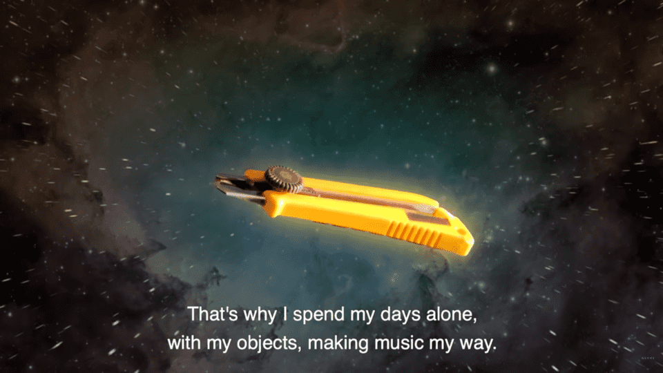
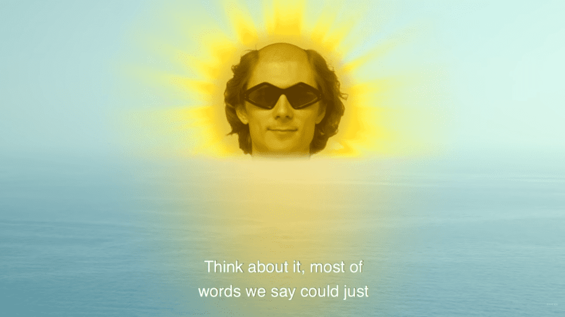
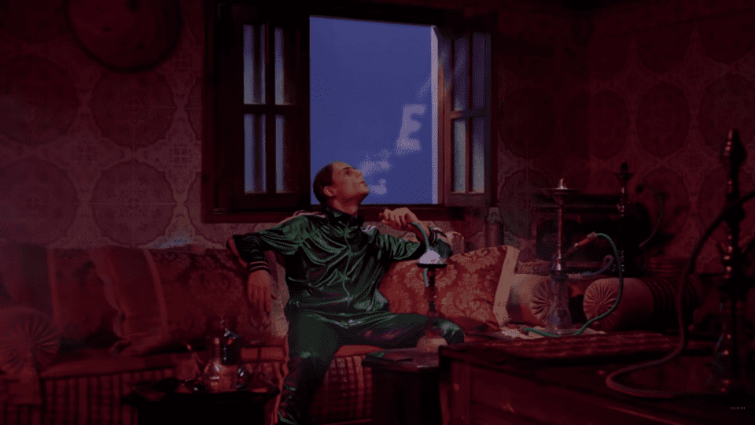
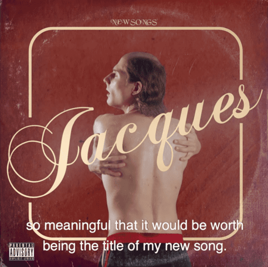
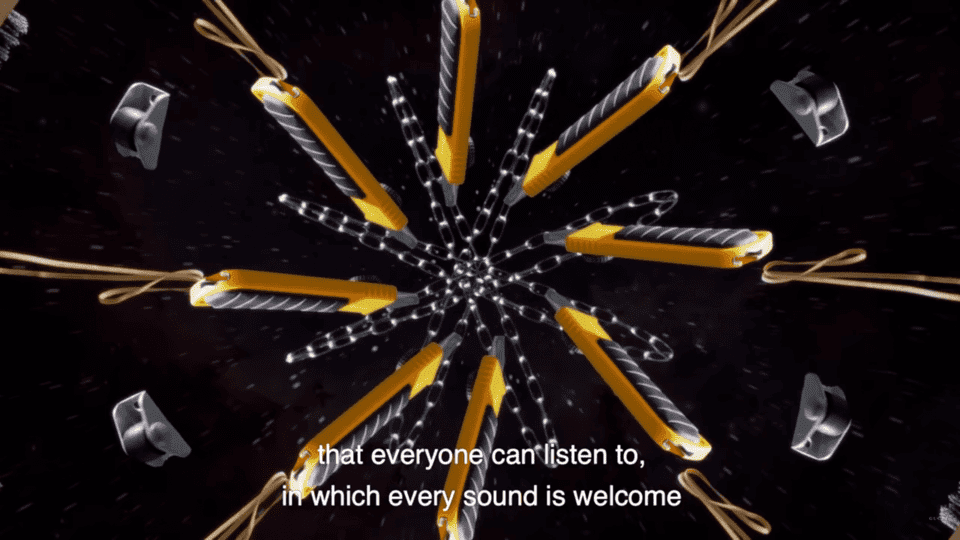
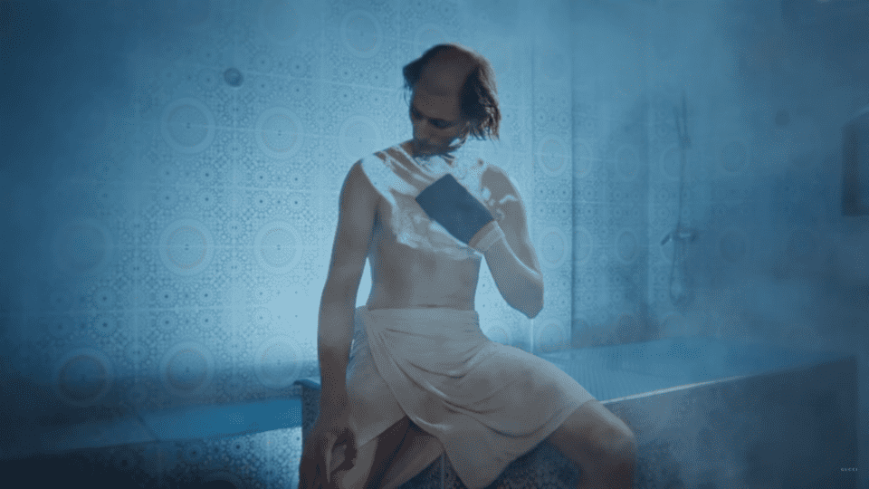
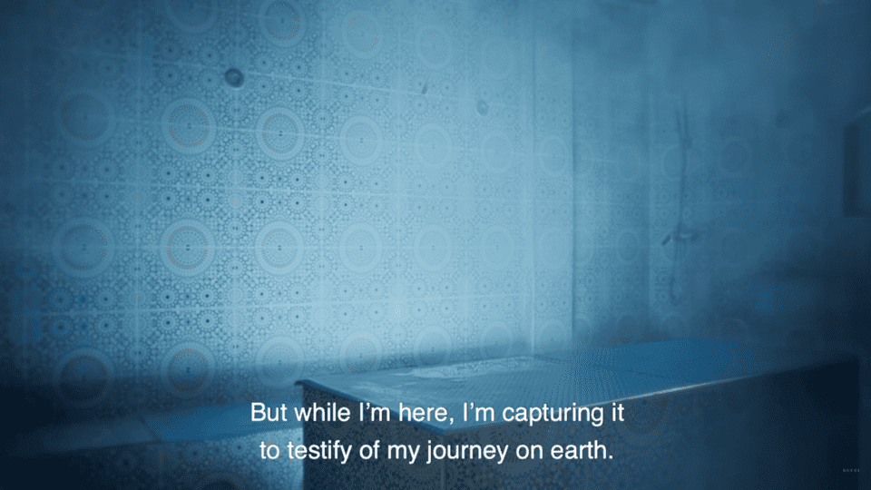
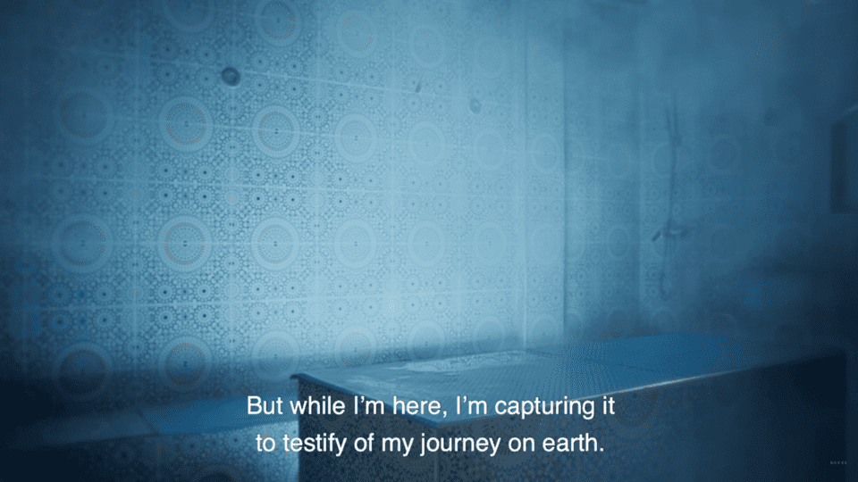

클로에 베일리(Cloé Bailly) 감독이 촬영한 이번 영상은 모로코(Morocco)에 위치한 작은 마을 타가주트(Taghazout)를 배경으로 펼쳐진다. 자크는 이 마을 근처에 스튜디오를 마련하여 그를 둘러싼 세상을 관찰하고, 또 실험했다. 영상은 일상에서 발생하는 여러 소리를 수집하는 자크의 모습을 보여준다. 금속 그릇에 플라스틱 팽이가 떨어지는 소리부터 A4 용지를 접을 때 나는 소리까지, 자크는 다양한 소리를 녹음하고 그의 라이브 공연에서 활용했다.


“그 어떤 소리라도 적절한 형태로 배치되면 음악이 될 수 있다는 사실이 매우 흥미로워요." 자크는 설명합니다. “이 세상 어딘가엔 반드시 나를 위한 곳이 있다는 것을 느끼게 해주죠. 음악을 통해 그 사실을 알리고 싶었어요. 아직 그걸 느껴보지 못한 사람들에게요."



자크는 그저 뮤지션으로만 정의되지는 않는다. 음악은 단지 그가 표현하고자 하는 바를 가능하게 하는 현재의 매개체이다. “저는 생각을 공유하고, 세계를 여행하며 사람들을 만나고, 돈을 벌고, 또 즐거운 시간을 보내기 위해 음악을 만들었습니다. 저에게 가장 중요한 건 음악이 아니에요. 음악이 가장 중요하다고 믿는 사고 방식은 좋은 음악을 만드는 데 있어서 저에게 도움을 주지 않거든요. 그러니까 제게 음악이 어떤 의미냐고요? 그렇게 중요한 존재는 아닌 거죠..."


Music: original composition by Jacques Auberger

Music: original composition by Jacques Auberger